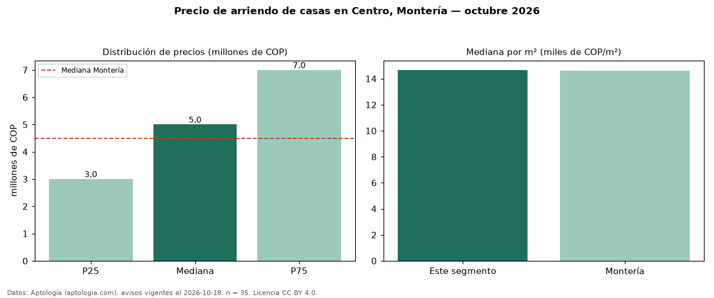

Precio de arriendo de casas en Centro, Montería — octubre 2026
COP 5,00 millones al mes es el canon mediano de casas en arriendo en Centro, Montería (n = 35 avisos). Frente a la mediana de Montería para casas (COP 4,50 millones), queda 11 % por encima. Por metro cuadrado, la mediana es COP 14.670/m² al mes (n = 32 avisos con área), 0 % por encima de Montería (COP 14.634/m²). Con el precio por m² de venta del mismo segmento (COP 2,88 millones/m²), la rentabilidad bruta implícita es 6,1 % anual (aproximación con medianas de ofertas distintas). El área mediana anunciada es 400 m². El segmento con más oferta es el de 3 o más habitaciones (32 avisos, mediana COP 5,00 millones). La mitad central de los avisos va de COP 3,00 millones a COP 7,00 millones (razón 2,3), una dispersión alta. El estrato más frecuente es 3 (75 % de los avisos con estrato). Datos: Aptología (aptologia.com), CC BY 4.0 — https://www.aptologia.com/arriendo/monteria/centro. Archivos: PDF, CSV con las cifras y gráfica PNG.

| Avisos únicos | 35 |
|---|---|
| Percentil 25 | COP 3.000.000 |
| Mediana | COP 5.000.000 |
| Percentil 75 | COP 7.000.000 |
| Mediana por m² | COP 14.670 |
Fuente: avisos vigentes de portales inmobiliarios recopilados por Aptología, deduplicados (mínimo 30 avisos únicos por celda). Precios pedidos, no cerrados. Fecha: 2026-10-18.